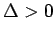
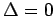

Inhalt Index DeskTop Bronstein

 Geometrie Vektoralgebra und analytische Geometrie Analytische Geometrie des Raumes Flächen 2. Ordnung, allgemeine Theorie
Geometrie Vektoralgebra und analytische Geometrie Analytische Geometrie des Raumes Flächen 2. Ordnung, allgemeine Theorie


|  (hierbei T<0) | ||
| Elliptisches Paraboloid |
Hyperbolisches Paraboloid |
|
|  | Zylinderfläche mit einer Kurve 2. Ordnung als Leitkurve, deren Gestalt verschiedene Zylinder nach sich zieht: Für T>0 imaginäre elliptische, für T<0 hyperbolische und für T=0 parabolische Zylinder, wenn die Fläche nicht in zwei reelle, imaginäre oder zusammenfallende Ebenen zerfällt. Die Bedingung für das Zerfallen lautet:  |
|